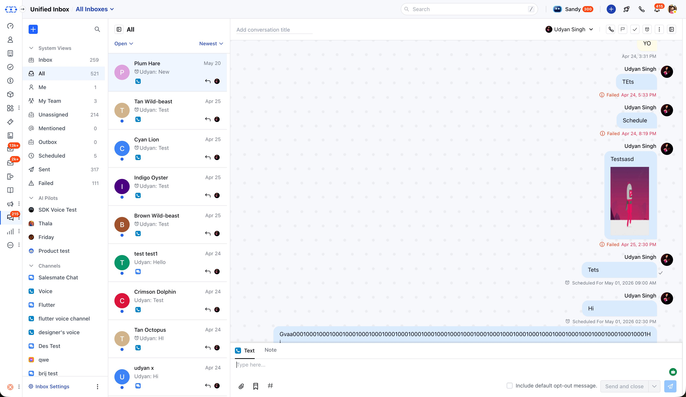
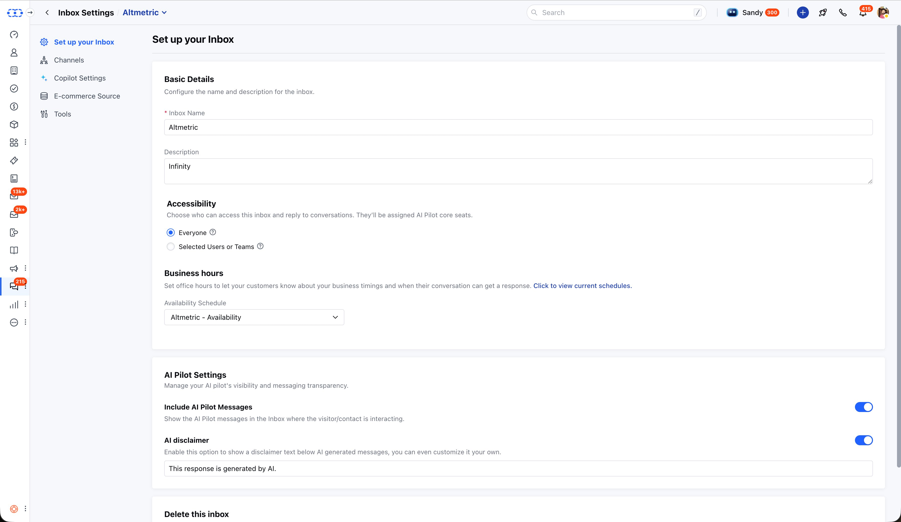
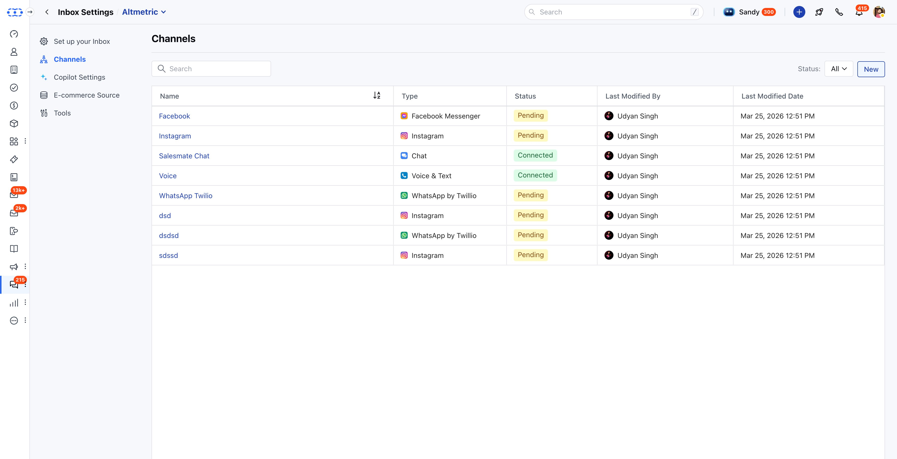
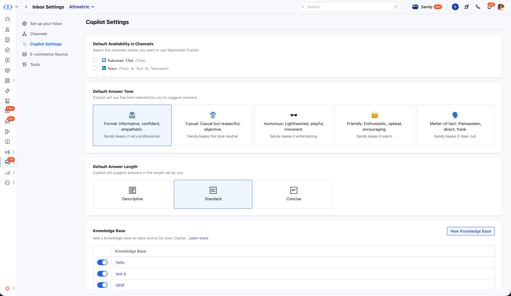
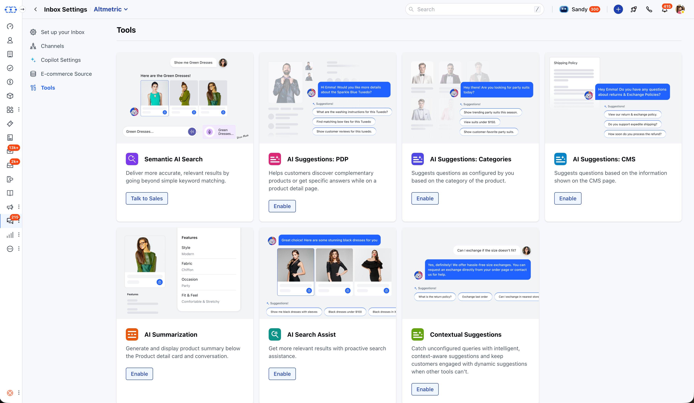
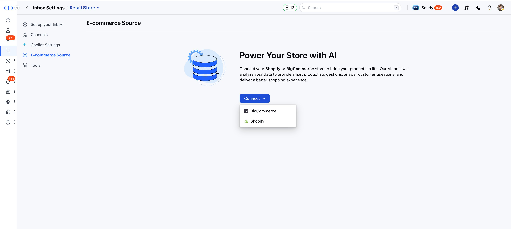

A complete re-architecture of how Salesmate handles customer conversations - from a single rigid workspace to a flexible, multi-inbox system that scales across teams and channels.
Live product - All channels, one view
salesmate.io · Unified Inbox

Unified Inbox - system views, channel list, and conversation panel
Role
Product Design Lead
Timeline
2–3 Months
Platform
Salesmate CRM · Web
Collaboration
CEO-direct
Status
Live · Shipped
Tools
Figma Design · FigJam
01
Overview
The Unified Inbox is one of Salesmate's core communication surfaces - the place where agents handle all customer conversations across every channel. This project wasn't a UI refresh. It was a complete re-engineering: moving from a single-workspace, per-channel system to a flexible, multi-inbox architecture with inbox-level access control, built-in AI Copilot, and a dedicated eCommerce AI tools layer.
Available across both Salesmate CRM and Skara, the new inbox supports chat, Facebook Messenger, Instagram, WhatsApp, Voice & Text, TikTok, and email - all manageable from a single view. I led design end-to-end, working directly with the CEO.
02
The old system forced every team into one workspace - with channel access managed separately for each channel, and a manual activation step just to get started.
01 - RIGIDITY
Single workspace limit
Every team - sales, support, marketing - had to share one workspace. There was no way for different teams to operate their own separate communication inboxes within the same CRM.
02 - COMPLEXITY
Per-channel access control
Giving someone access to the inbox meant configuring permissions for every individual channel separately. As the number of channels grew, this became a significant admin burden.
03 - FRICTION
Manual activation barrier
The old inbox required a separate activation step and license before teams could start using it - adding unnecessary friction to onboarding and slowing adoption.
03
Old System vs New
The core shift was architectural - from a single, centrally-managed workspace to a model where each team can own their inbox independently, with access and AI configured at the inbox level rather than scattered across individual channels.
Old System
Single workspace - all teams shared one inbox
Access configured per-channel, one by one
Separate activation step required (with license fee)
Channels managed in isolation from each other
No concept of multiple inboxes for different teams
AI not integrated at inbox level
New System
Multiple inboxes - each team has their own
Access granted at inbox level, applies to all channels inside
Default inbox active from day one - no activation needed
All channels managed together under their inbox
Sales, support, marketing inboxes can coexist in one account
AI Copilot, tone, length, and KB configured per inbox
04
Core Architecture
Three foundational decisions shaped the new inbox model. Each one directly addressed a limitation of the old system and made the product significantly easier to set up, manage, and scale.
01
Multiple Inboxes
Teams can create separate inboxes - each with their own channels, access rules, and AI settings. A sales team and a support team can operate completely independently within the same Salesmate account.
02
Inbox-Level Access
Grant access to an inbox once - it automatically applies to every channel inside it. This replaced the old model where access had to be configured per-channel individually, drastically simplifying administration.
03
Active by Default
The new inbox removed the separate activation step entirely. A default inbox is ready to use from day one. Teams can immediately start adding channels and managing conversations - zero setup barrier.
05
Design Decisions
A
Inbox Configuration
Everything Configurable at Inbox Level
Each inbox has its own identity - name, accessibility (everyone or selected users/teams), business hours, and AI Pilot settings. The "Include AI Pilot Messages" toggle controls whether AI-generated replies are visible in the inbox view. The "AI disclaimer" toggle adds a customisable label below AI-generated messages, giving teams control over how transparent they want to be with customers about AI involvement.
Screen - Inbox Settings · Setup
salesmate.io · Unified Inbox

Inbox Settings - name, accessibility, business hours, AI Pilot visibility and disclaimer controls
B
Channel Management
All Channels Managed From One Table
The Channels tab consolidates every communication channel under a single inbox - Facebook Messenger, Instagram, Salesmate Chat, Voice & Text, WhatsApp Twilio, and more. The status column (Connected / Pending) gives admins a clear at-a-glance view of what's active versus still in setup. Because access is now inherited from the inbox rather than set per-channel, adding a new channel doesn't require reconfiguring permissions - it just works.
Screen - Inbox Settings · Channels
salesmate.io · Unified Inbox

Channels - all channel types and connection statuses in one table
C
AI Copilot Layer
AI Configured Per Inbox, Not Globally
Copilot Settings let each inbox define its own AI behaviour independently - which channels Copilot is active on, what tone it uses (Formal / Casual / Humorous / Friendly / Matter-of-fact), how long its answers are (Descriptive / Standard / Concise), and which Knowledge Base it pulls from. This means a formal B2B sales inbox and a friendly retail support inbox can both use AI Copilot but with completely different personalities - within the same Salesmate account.
Screen - Inbox Settings · Copilot Settings
salesmate.io · Unified Inbox

Copilot Settings - channel selection, tone, answer length, and knowledge base per inbox
D
eCommerce AI Tools
A Full AI Retail Layer, Built Into the Inbox
For eCommerce teams, I designed a dedicated Tools section extending the inbox with AI capabilities for online retail: Semantic AI Search (goes beyond keyword matching to understand query context), AI Suggestions for product pages (PDP), category pages, and CMS pages, AI Summarization of product details, AI Search Assist, and Contextual Suggestions to handle queries that fall outside configured tools. All powered by connecting a Shopify or BigCommerce store as the data source.
Screens - Tools & E-commerce Source
salesmate.io · Unified Inbox

Tools - seven AI-powered eCommerce capabilities, each independently toggleable
salesmate.io · Unified Inbox

E-commerce Source - connect Shopify or BigCommerce to power all AI tools
06
Beyond the core inbox - a full feature system for managing every edge case agents deal with daily.
Smart System Views
Inbox, All, Me, My Team, Unassigned, Mentioned, Outbox, Scheduled, Sent, Failed - every agent and team lead gets the exact view they need with no setup.
Scheduled & Failed Messages
Dedicated folders for scheduled and failed messages with a focused view that isolates the queued item - agents can reschedule, retry, or delete without disrupting other conversations.
Bulk Operations
Select multiple conversations to close, reassign, mark as read/unread. In failed folders: bulk retry or delete. In scheduled folders: reschedule, send immediately, or delete.
Outbound Quick Creation Popup
A unified composer for outbound messages across Email, Text, WhatsApp, and Chat - minimisable, movable, full-screen capable. One consistent experience regardless of channel.
Auto-Close AI Conversations
Conversations owned by AI Pilot that go inactive for a configurable period close automatically with an optional closing message - keeping the inbox clean and resolution metrics accurate.
TikTok Channel
Phase 1 brings TikTok DMs into the unified inbox with contact auto-creation and conversation history. Phase 2 adds Flow automation triggered by incoming TikTok messages.
Unread Count Customisation
Users can configure which inboxes contribute to their sidebar unread badge, and whether it counts all conversations or only directly assigned ones - reducing notification fatigue.
WhatsApp Contextual Replies
Agents can reply to specific messages within WhatsApp threads, keeping context clear in busy conversations and enabling faster, more precise responses.
07
Outcome
The Unified Inbox shipped and is live. Users have responded positively since launch. The architectural shift from single-workspace to multi-inbox - with inbox-level access control and AI built in at every layer - made the product significantly easier to adopt, manage, and grow with.
Live & Shipped
The Unified Inbox is in active use across Salesmate CRM and Skara. Positive user response confirmed since launch across chat, WhatsApp, Facebook, Instagram, and voice channels.
Simpler to Manage
Moving access control to inbox level - rather than per-channel - removed a significant admin burden. What previously required multiple configuration steps now takes one.
Scalable Architecture
The multi-inbox model scales naturally as teams grow. Sales, support, and marketing can each operate independently within the same account - no workarounds required.